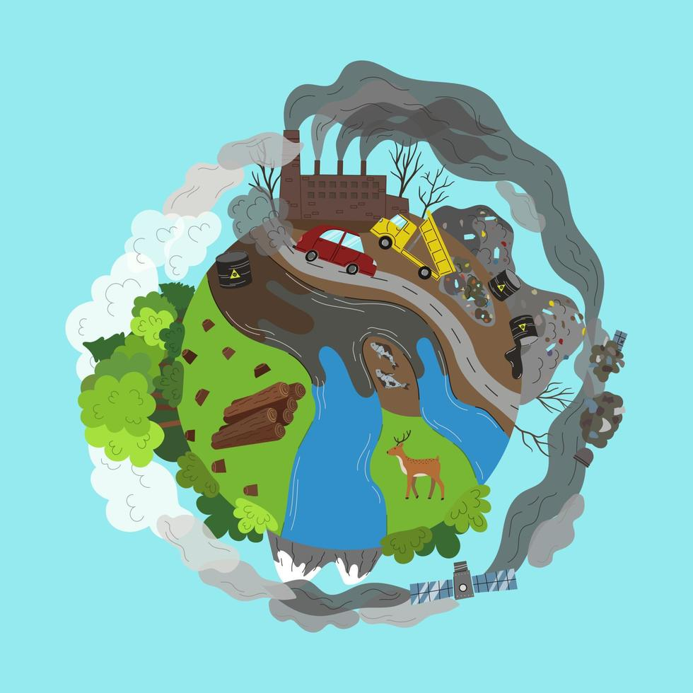

Problemas
- Transformación económica: Cambios en los sectores energético, industrial, de transporte, alimentario, agrícola y forestal.
- Compromiso internacional: Implementar y fortalecer acuerdos como el Acuerdo de París.
- Mayor inversión en energías renovables: Reducir la dependencia de combustibles fósiles.
- Acción empresarial y gubernamental: Promover regulaciones y financiamiento para la mitigación y adaptación al cambio climático.
- Resiliencia y adaptación: Aplicar planes nacionales de adaptación y fortalecer comunidades vulnerables.
